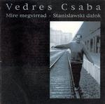

| Artist: | Csaba Vedres |
| Title: | Mire Megvirrad-Stanislawski Dalok |
| Label: | Periferic Records XP009 |
| Length(s): | 69 minutes |
| Year(s) of release: | 2000 |
| Month of review: | [05/2002] |
| 1) | Eso | 1.42 |
| 2) | Valaki Sir | 6.30 |
| 3) | Mire Megvirrad | 11.33 |
| 4) | Misericordia | 4.59 |
| 5) | Szelid Szel | 3.37 |
| 6) | Csak Mesz | 10.40 |
| 7) | Ahoi! Ahoy! | 2.52 |
II Ket Groteszk (1988)
| 8) | Tanc | 1.32 |
| 9) | Zum-zum | 1.31 |
III Stanislawski Dalok (1997-1998)
| 10) | Mely, Hosszu Tel | 1.07 |
| 11) | A Tengeresz | 5.17 |
| 12) | To Gloria | 1.57 |
| 13) | Keso | 1.23 |
| 14) | A To | 1.51 |
| 15) | Dunakeszi Elagazas | 1.58 |
| 16) | Ennie A Kenyeret | 3.09 |
| 17) | Szolgalati Jarat | 6.01 |
IV
| 18) | Elmenoben | 1.01 |
Valaki Sir is a piano vocal track as well, but using the extra length to slowly build momentum as well as strength, towards the piano intermezzo, afterwards returning to the early gentleness.
Mire Megvirrad opens with a choir leading into a vocal section, remarkably followed by a piano solo that moves towards a piano piece somewhere between classical and jazz, and sometimes touching on boogie woogie even. The tracker closes with another vocal section, a bit spunkier than the ones before.
Misericordia sees the piano vocal formula extended with a flute, but the gentle atmosphere remains.
Szelid Szel is a bit more up tempo, and quite familiar, considering it is part of After Crying's material as well.
Csak Mesz starts in the same style as previous tracks, but as it progresses gains in speed, with rolling pianos and trumpet (sounding like a bugle) in the back. This track is definitely more striking than the previous.
Ahoi! Ahoy! (no typo) gives this first section a near swinging end.
Tanc opens section II a bit up beat, with an almost staccato piano rhythm, not without a certain perkiness, which is taken into Zum-Zum. Pretty happy sounding stuff. A little too happy, as far as I'm concerned.
Mely, Hosszu Tel opens section III with a flute solo.
A Tengeresz is another piano vocal track, mid tempo this time.
To Gloria and Keso are slower tracks.
Even though piano vocal, A To is different from the other tracks, being more esotheric, as you would see in Not Drowning Waving stuff. Better.
Dunakeszi Elagazas is a but stronger, giving way to the gentleness of Enni A Kenyeret.
There's something familiar about Szolgalati Jarat, but I'm not quite sure what. For a change, the track contains narration as well as vocals.
Elmenoben closes the album with a trumpet solo.